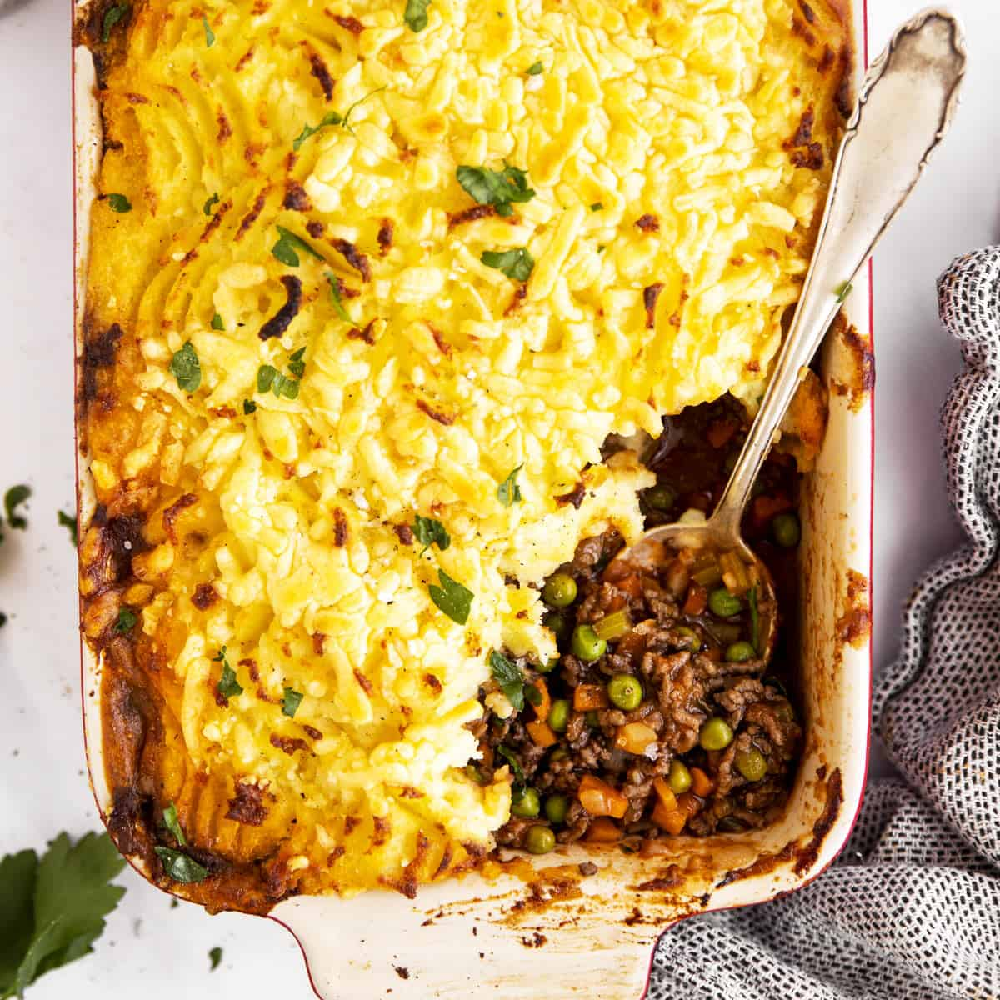

Shepherd's Pie

Description
Ireland's finest
a dish that is warm and loving, and always makes you feel at home
Ingredients
meat filling:
- 2 tablespoons olive oil
- 1 cup chopped yellow onion
- 1 lb. ground beef/lamb
- 2 teaspoons dried parsley leaves
- 1 teaspoon dried rosemary leaves
- 1 teaspoon dried thyme leaves
- 1/2 teaspoon salt
- 1/2 teaspoon ground black pepper
- 1 tablespoon worcestershire sauce
- 2 cloves garlic (minced)
- 2 tablespoons all-purpose flour
- 2 tablespoons tomato paste
- 1 cup beef broth
- 1 cup frozen mixed peas and carrots
- 1/2 cup frozen corn kernels
potato topping:
- 3/2 - 2 lb. russet potatoes
- 8 tablespoons unsalted butter
- 1/3 cup half & half
- 1/2 teaspoon garlic powder
- 1/2 teaspoon salt
- 1/4 teaspoon ground black pepper
- 1/4 cup parmesan cheese
Steps
meat filling:
- add oil to large skillet over medium-high heat for 2 min
- add onions to skillet and cook 5 min, stirring occasionally
- add ground beef/lamb (break apart with spoon), parsley, rosemary, thyme, salt, pepper
-stir well, cook 6-8 min until meat browned
- add worcestershire sauce and garlic, stir and cook 1 min
- add flour and tomato paste, stir until no clumps remain
- add broth, frozen vegetables - bring to boil, then simmer for 5 min
- set aside, preheat oven to 400 degrees F
potato topping:
- place potatoes in large pot and cover with water - bring to boil, then reduce to simmer for 10-15 min
- drain, and return potatoes to pot. let rest 1 min to evaporate remaining liquid
- add butter, half & half, garlic powder, salt, pepper. mash potatoes and mix ingredients together
- add parmesan cheese, and stir until combined
assemble casserole:
- pour meat filling into 9x9 or 7x11 baking dish
- spoon mashed potatoes on top, spread with spoon until even
- bake uncovered 25-30 min
- cool 15 min, then serve